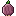
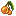
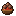
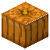

Recipes
Dishes
All 36 dishes of Full Course with their tier, benefits and recipe, then the ingredients and the kitchen. Hover or tap a slot for its name.
36 dishes
Baked Onion
★☆☆☆☆ Simple · 2 min
Vigor I
Furnace, smoker or campfire
For a cheap extra heart.
Berry Skewer
★☆☆☆☆ Simple · 2 min
Swift I
For a travel snack.
Charred Chorus
★☆☆☆☆ Simple · 2 min
Lightfoot I
Smoker or campfire
For End city ledges.
Fried Egg
★☆☆☆☆ Simple · 2 min
Fortitude I
Furnace, smoker or campfire Not with Farmer's Delight installed: its fried egg takes this recipe's place and counts as this dish.
Not with Farmer's Delight installed: its fried egg takes this recipe's place and counts as this dish. For first-night armor.
Hot Cocoa
★☆☆☆☆ Simple · 2 min
Fortune I
For a fishing trip.
Mushroom Skewer
★☆☆☆☆ Simple · 2 min
Night Eye I
For the first cave trip.
Roasted Ember Pepper
★☆☆☆☆ Simple · 2 min
Ember I
Furnace, smoker or campfire
For lava-lake insurance.
Egg Sandwich
★★☆☆☆ Prepared · 5 min
Diligence IFortitude I
Crafting
For the miner's lunch.
Fruit Salad
★★☆☆☆ Prepared · 5 min
Swift IFortune I
Crafting

For a sprint across the map.
Glazed Apple
★★☆☆☆ Prepared · 5 min
Swift IFortune I
Crafting
For long walks.
Glow Berry Jam
★★☆☆☆ Prepared · 5 min
Swift IFortune I
Cooking Pot
in a
For a long walk, and the Glow Berry Tart.
Honey Toast
★★☆☆☆ Prepared · 5 min
Diligence IFortune I
Crafting For a mining breakfast.

Meatballs
★★☆☆☆ Prepared · 5 min
Brawn IVigor I
Cooking Potin a
For early fights.
Pepper Jerky
★★☆☆☆ Prepared · 5 min
Brawn IEmber I
For Nether rations.
Pumpkin Soup
★★☆☆☆ Prepared · 5 min
Vigor IMending I
Cooking Pot
in a For a rainy-day bowl.
Cave Mushroom Soup
★★★☆☆ Hearty · 10 min
Night Eye IIMending II
Cooking Pot
 in a
in a For deep-dark caving.
Cheese Toast
★★★☆☆ Hearty · 10 min
Fortitude IIDiligence II
Crafting
For strip mining.
Chorus Jelly
★★★☆☆ Hearty · 10 min
Lightfoot IIFortune II
Cooking Potin a For an End trip that ends at the fishing hole.
Ember Chili
★★★☆☆ Hearty · 10 min
Ember IIBrawn II
Cooking Potin a For Nether fortress raids.
Fish Chowder
★★★☆☆ Hearty · 10 min
Tide IIFortitude II
Cooking Pot
 in a
in a For ocean monuments.
Fish Taco
★★★☆☆ Hearty · 10 min
Tide IIDiligence II
Crafting
For beach exploring.
Onion Rings
★★★☆☆ Hearty · 10 min
Vigor IIDiligence II
Cooking Pot
For building sessions.
Pancakes
★★★☆☆ Hearty · 10 min
Diligence IIFortitude II
Cooking Pot
For the big breakfast.
Sushi Roll
★★★☆☆ Hearty · 10 min
Tide IIVigor II
Crafting
For diving for wrecks.
Vegetable Stew
★★★☆☆ Hearty · 10 min
Vigor IIMending II
Cooking Potin a For the everyday adventurer's meal.
Apple Pie
★★★★☆ Gourmet · 20 min
Swift IIIFortune IIIDiligence III
Brick Oven
For a long dig, then the fishing hole.
Cheese Bake
★★★★☆ Gourmet · 20 min
Vigor IIIFortitude IIIDiligence III
Brick Oven For a long build day.
Chorus Soufflé
★★★★☆ Gourmet · 20 min
Lightfoot IIIFortitude IIIFortune III
Brick Oven For End city raids.
Fish Pie
★★★★☆ Gourmet · 20 min
Tide IIIFortitude IIIDiligence III
Brick Oven
For monument clearing.
Mushroom Wellington
★★★★☆ Gourmet · 20 min
Brawn IIINight Eye IIIDiligence III
Brick Oven For an ancient city run.
Nether Flatbread
★★★★☆ Gourmet · 20 min
Ember IIIBrawn IIIFortitude III
Brick Oven
For a bastion assault.
Pickle Platter
★★★★☆ Gourmet · 20 min
Vigor IIIFortitude IIIDiligence III
Crafting
For patience's reward.
Shepherd's Pie
★★★★☆ Gourmet · 20 min
Brawn IIIVigor IIIFortitude III
Brick Oven For raid defence.
Glow Berry Tart
★★★★★ Feast · 30 min · 4 servings
Swift IVFortune IVFortitude IV
Brick Oven
For the night before an expedition.
Harvest Pie
★★★★★ Feast · 30 min · 6 servings
Vigor IVDiligence IVSwift IV
Brick Oven
For a group's work day.
Roast Banquet
★★★★★ Feast · 30 min · 8 servings
Brawn IVVigor IVMending IV
Brick Oven
For boss fights.
Ingredients and crops
Made along the way and used in the dishes above. Grilled Fillet and Flatbread can also be eaten as one-star food.
Tools and stations